Diseño, modelado y animación de personaje y escenario
e integración de físicas en Unity
INTRODUCCIÓN
Para este proyecto, se diseñaron y se modelaron un personaje y un escenario desde cero utilizando herramientas como 3Ds Max y SketchUp. Además de texturizar, y renderizar, se animaron y finalmente se importaron a Unity.
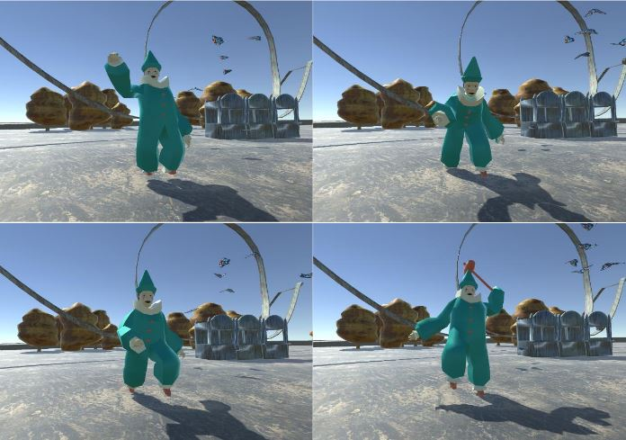
PERSONAJE
El personaje escogido a modelar se trata de un payaso inspirado en dibujos de pósters vintage y bocetos de payasos con diferentes disfraces.

Ver más
El software escogido para realizar esta tarea fue 3Ds Max. Siguiendo una referencia del boceto inicial, se creó el cuerpo, y después el resto de elementos como el gorro o el martillo.


RENDERS PERSONAJE


ANIMACIONES
Para lograr la animación del payaso, se creó un Base Human y se ajustaron los huesos al personaje. Además se añadieron los dedos de las manos. Después se aplicó el modificador de Skin y se enlazaron todos los huesos del bípedo con la malla.
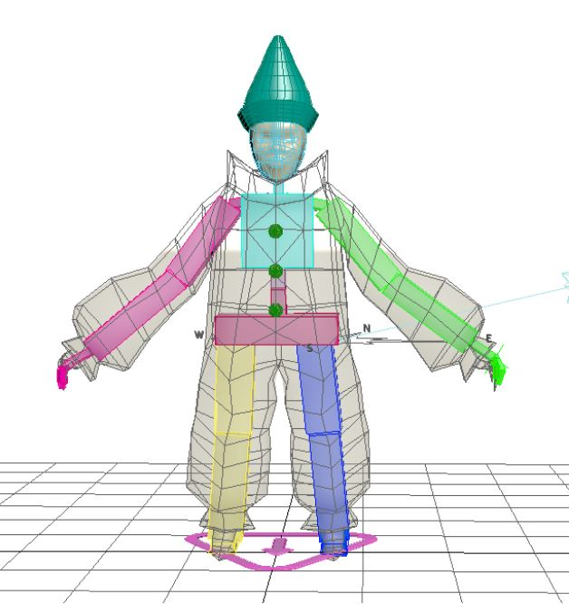
La cabeza y el gorro se enlazaron directamente al hueso de la cabeza. Para todas las animaciones se modificaron los pesos de los envelopes y lograr mover el muñeco de manera más acorde a los huesos a los que se estaban moviendo.
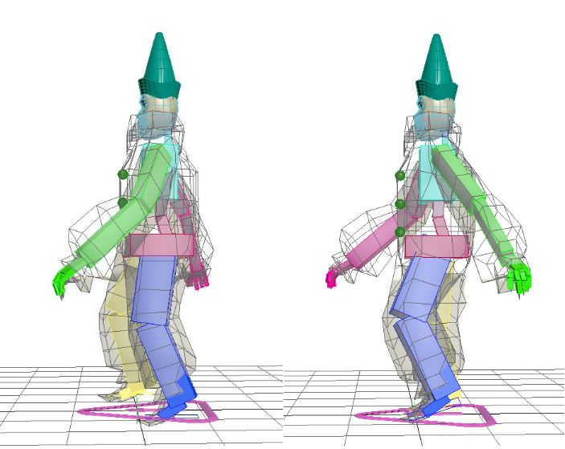
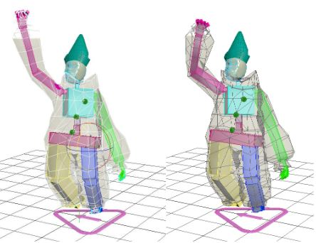
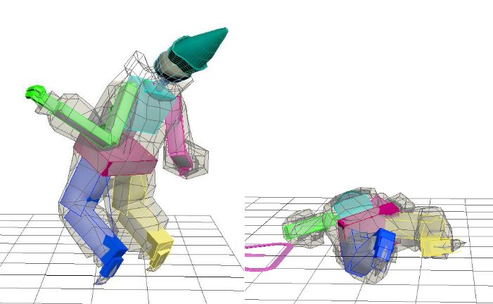
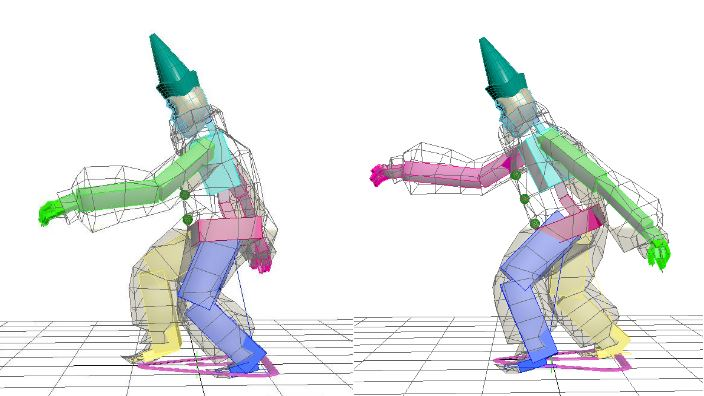
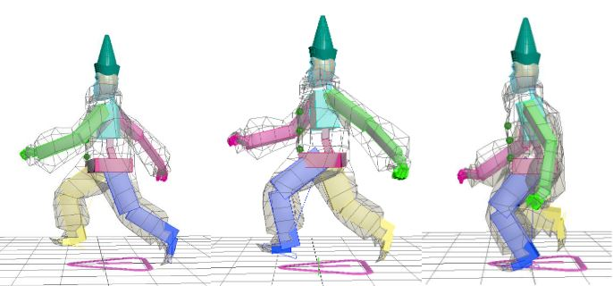
ANIMACIÓN CON ARMA
Primero, se importó el martillo al escenario. Se colocó el martillo en la mano izquierda. En el hueso de la palma, se creó un IK Target, se hicieron las modificaciones correspondientes en los ajustes para conseguir animar el movimiento final sin preocuparnos por la posición de cada uno de los huesos.
Para el ataque, se empezó por el movimiento del brazo, logrado a través de frames hechos con AutoKey. Una vez ajustado, se animó la pierna izquierda, para simular que está aplicando fuerza. Da un paso adelante, dobla un poco las rodillas y vuelve a la pose neutra. Finalmente, se hizo el desplazamiento del brazo derecho, con el mismo método.
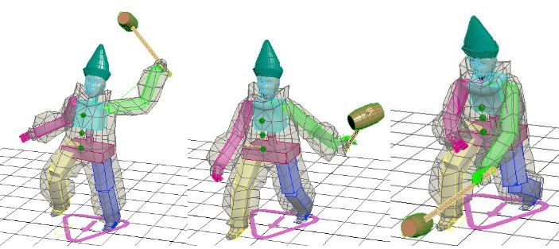
ANIMACIÓN FACIAL
A la hora de modelar la cabeza, se tuvieron en cuenta la posición de los loops y la anatomía para que a la hora de modelar diferentes expresiones resultara más sencillo.
Se hizo una copia de la cabeza en posición y se modelaron las expresiones de felicidad, enfado, tristeza y sorpresa y el cierre de cada ojo. Por último, con “Morpher” a la cabeza original, se asignaron los gestos como targets para conseguir el sistema de animación.
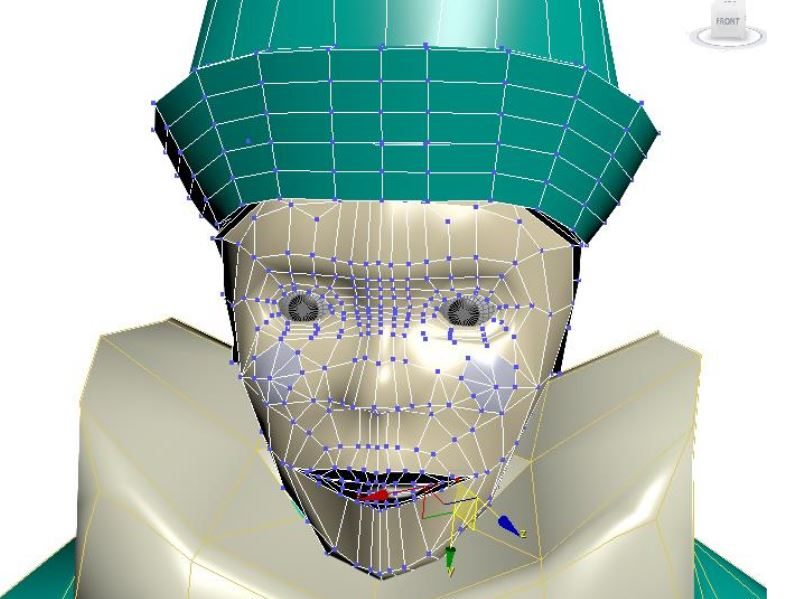

ESCENARIO
El escenario escogido a modelar es la representación de un carnaval abandonado. Está inspirado en la cuarta temporada de American Horror Story, e imágenes obtenidas en internet. La escena está coloreada con tonos apagados, marrones, verdes y azules y se ambienta en el atardecer.

Ver más
Casi todos los elementos han sido modelados en Sketch up, excepto la montaña rusa, el caballo del carrusel y las mariposas.
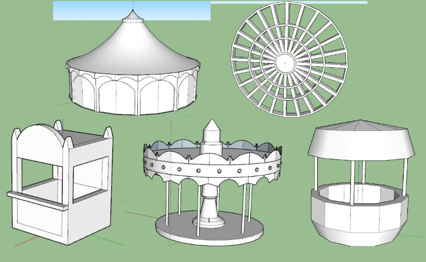
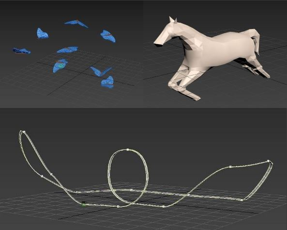
RENDERS ESCENARIO


ANIMACIONES
CARRUSEL
El carrusel hace una rotación en el eje Z. Al mismo tiempo, los caballos suben y bajan mientras giran. Para conseguir esta animación, se han enlazado al carrusel y solo se ha modificado su posición en el eje Z, ajustándolos en los frames correspondientes para que sigan un orden.
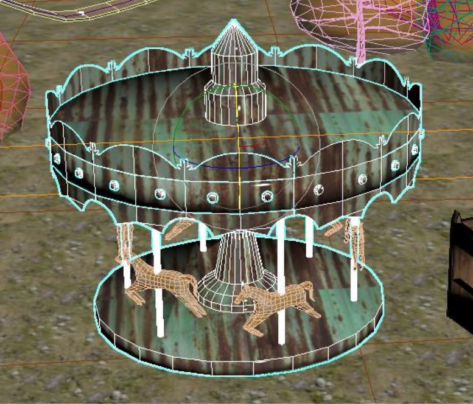
NORIA
Para la noria, se creó un frame de rotación sobre el eje Y. Para los asientos, se tuvo que modificar el pivote y enlazarlos a la noria. También se tuvo que cambiar su posición para que no rotaran con la noria y se mantuvieran boca arriba.
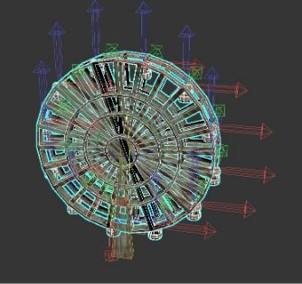
MONTAÑA RUSA
La montaña rusa sigue el path de un spline. Con un Dummy, activando la opción de “Follow”, le aplicamos el un path constraint, para que siga el camino del spline que forma la montaña rusa. Por último, enlazamos el carrito de la montaña rusa al Dummy. La rotación del coche ha sido ajustada en algunos frames también con
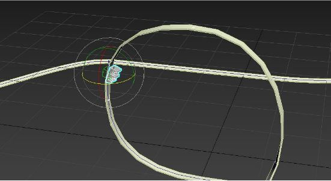
MARIPOSAS
Una vez modelada la mariposa, se le añadió un hueso principal en el cuerpo y dos huesos hijos en cada ala. Después se le aplicó el modificador de “Skin” y se le asignaron estos huesos.
En primer lugar, se animó el aleteo, aplicando una rotación de los huesos. También se ajustaron los pesos de la malla. Las keys del movimiento siguen la misma frecuencia, pero fueron desplazadas algunos frames para que no todas las mariposas movieran las alas a la vez.
Después, con los ayudantes “Crowd” y “Delegate”, se generaron ocho clones de la mariposa, con posiciones, rotaciones y escalas diferentes y se les asignó el comportamiento “Wander”.
Una vez importados en el proyecto del escenario, se reajustó el radio del comportamiento para que estuviera más acorde con la escena.
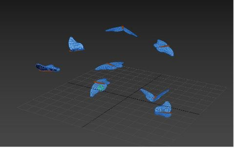
INCLUSIÓN EN MOTOR DE JUEGO
Una vez terminadas todas las animaciones, se exportaron las capas como archivos fbx para poder ser importadas en Unity.
El movimiento del escenario se ejecuta constantemente. Por cada animación del payaso se creó un “Animation Controller”. Después se añadieron los scripts correspondientes para pausar la animación del payaso, y elegir qué animación ver utilizando los números del teclado.
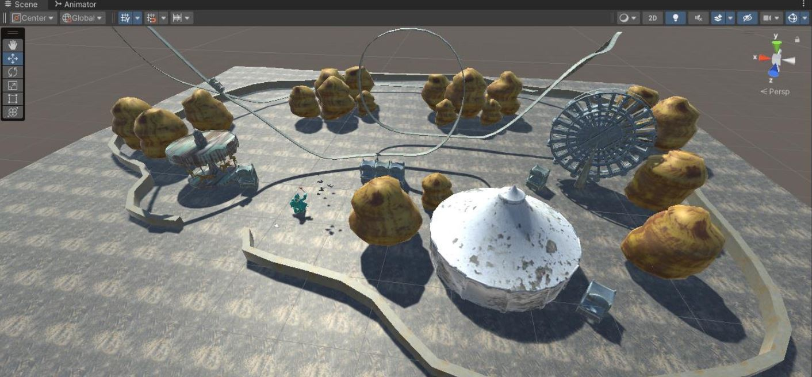
ANIMACIONES CON FÍSICAS
Además de estas animaciones, dentro de Unity se implementaron algunas más complejas con físicas.
Ver más
MESH CON MALLADO COMPLEJO
BANDERAS
Se modeló un mesh con forma triangular en 3Ds Max. Una vez importado en Unity, se implementaron las físicas de nodos y muelles a sus componentes para simular su movimiento.
HOJAS
Por otro lado, se modelaron dos meshes más complejos siguiendo la silueta de unas hojas. De la misma manera se importaron al proyecto, y se asignaron los scripts correspondientes a sus elementos.
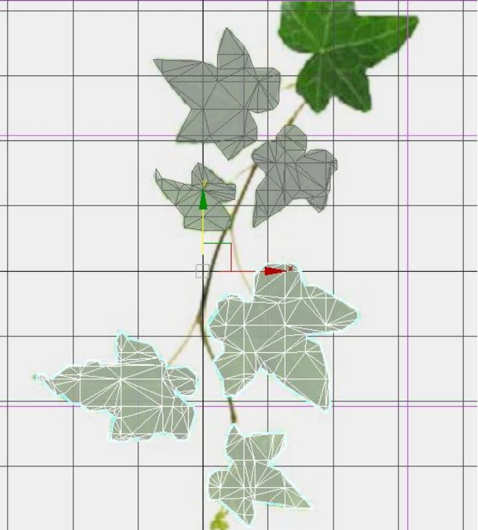
IMPLEMENTACIÓN DEL VIENTO
Para simular un viento que oscila en sus valores y calcular la fuerza total a la que estarán sometidos los nodos, se sumará la fuerza del viento a la de la gravedad.
Se crearon dos vectores, uno que contiene la fuerza base del viento, y otro en el que se almacena la del viento actual. La idea es utilizar una función trigonométrica para generar una fuerza cambiante. Se suma el valor calculado al viento base y se actualiza la fuerza total.
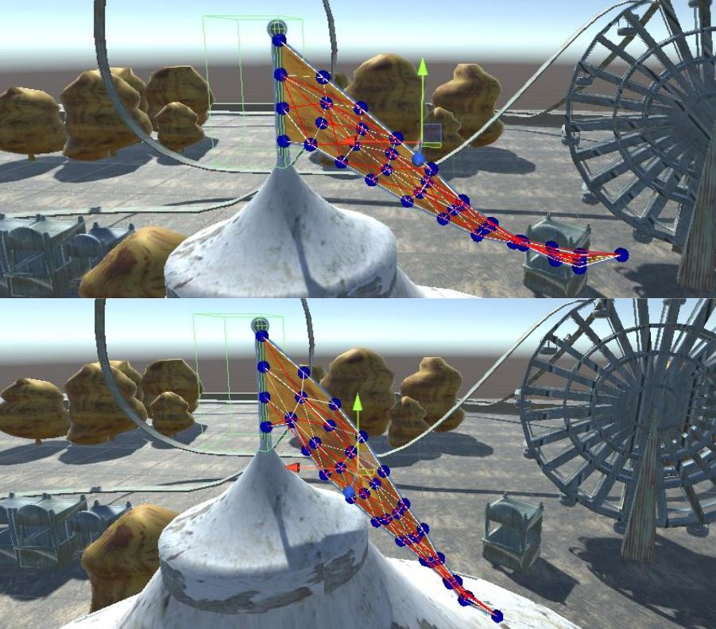
COLISIÓN CON EL SUELO
Se simuló la caída de las hojas desde un árbol. Para ello se utilizó un cubo colocado a la altura del suelo. Cuando un nodo de las hojas colisiona con este, se vuelve fijo, lo que detiene la la animación de caída.
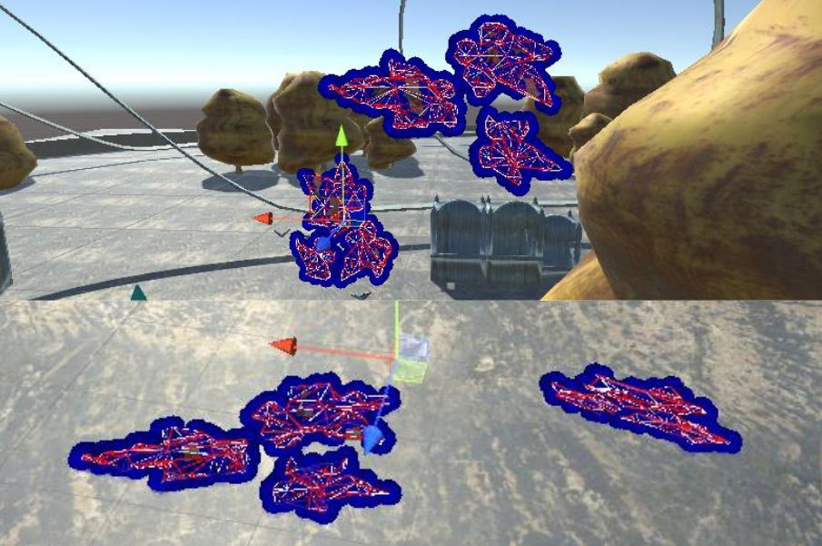
MUELLE UNIDIMENSIONAL
Finalmente, se implementó un muelle unidimensional en forma de cuerda con banderines. Con un nuevo script, se logra simular que los banderines están pegados a la cuerda. Este transforma la posición del Game Object que lo contiene a la del muelle que le corresponde.
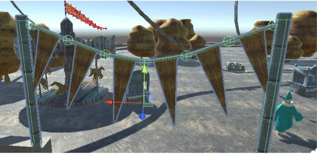